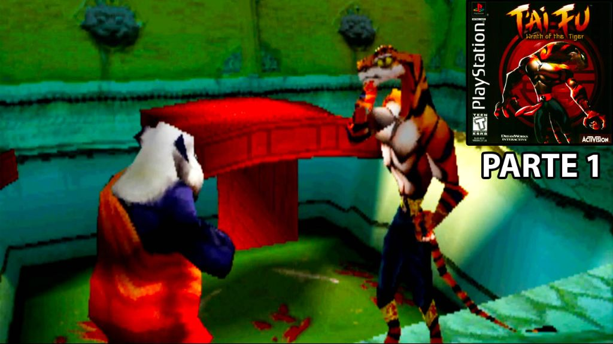
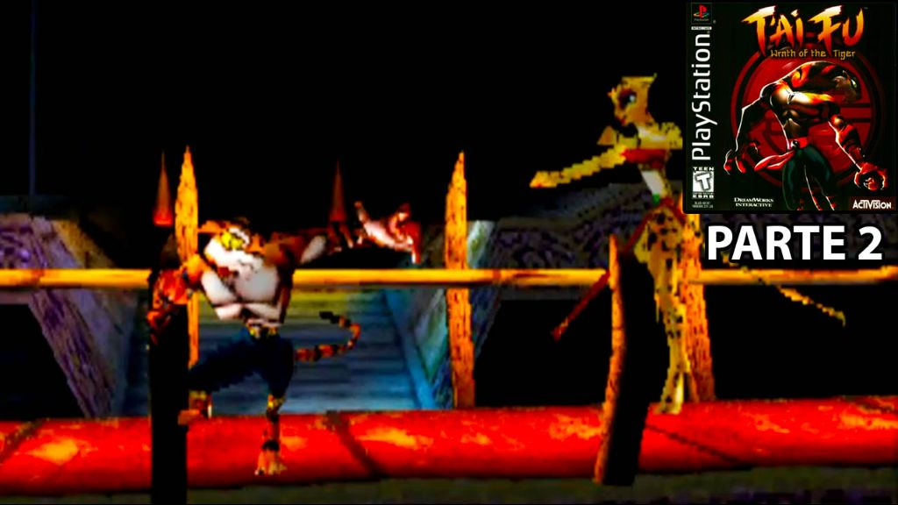
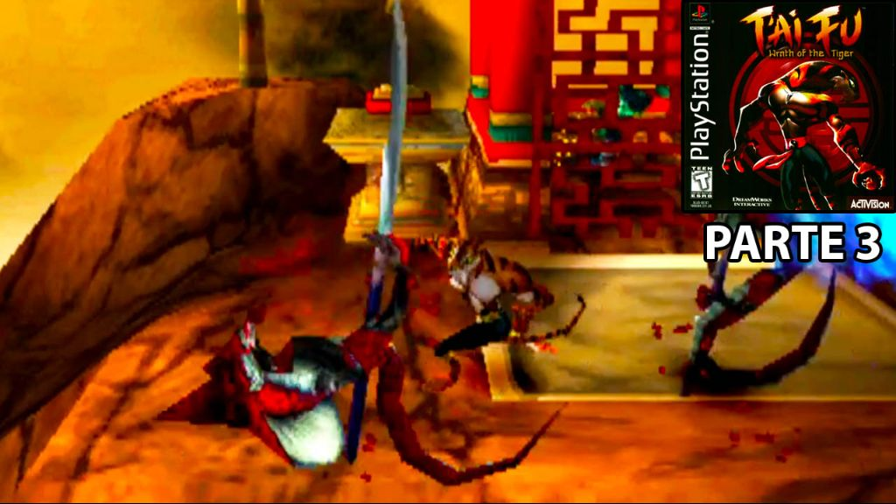
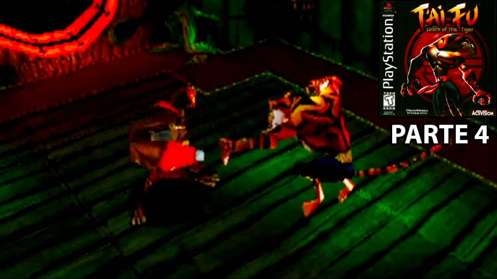
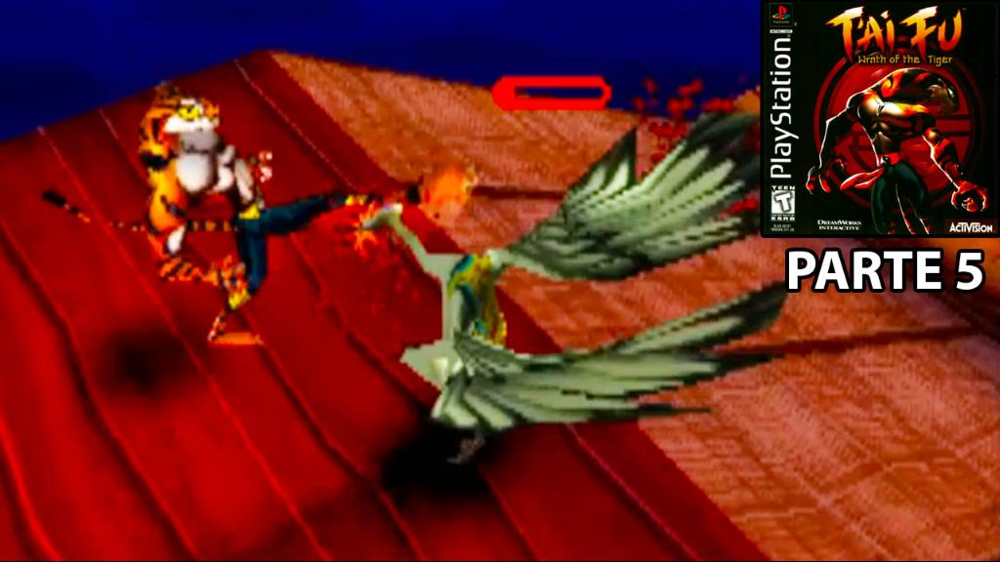
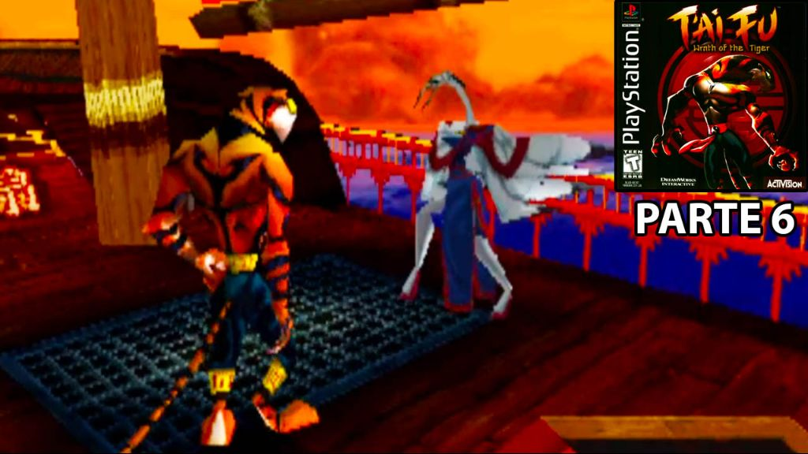
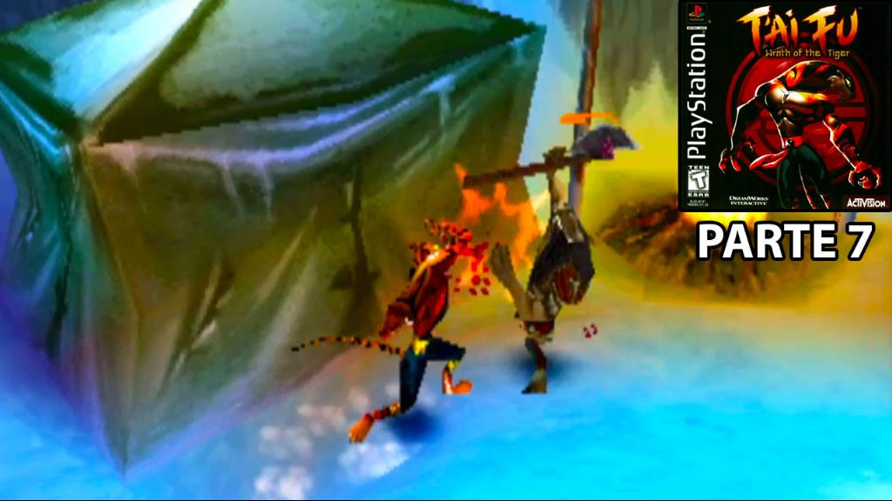
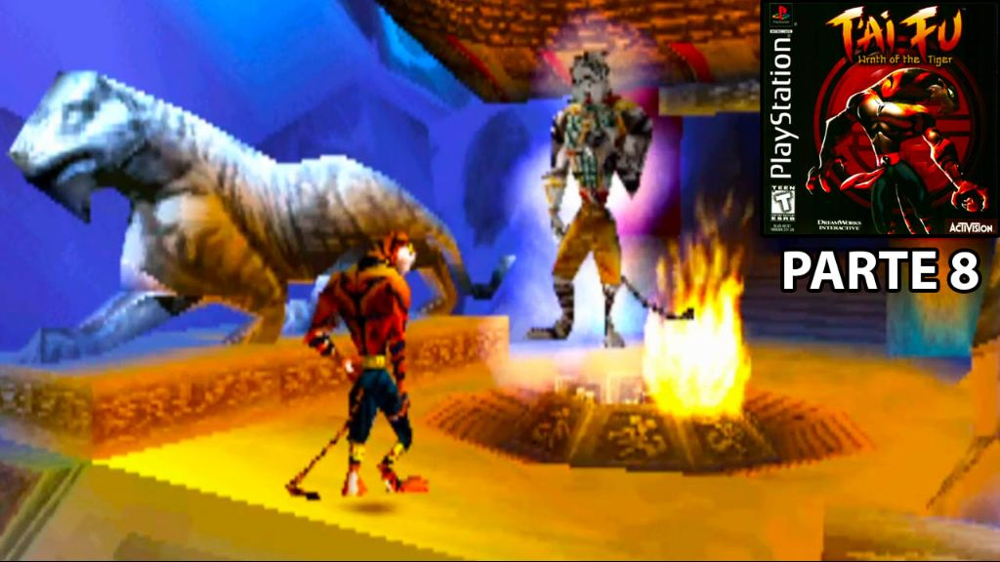

Tai Fu Wrath of the Tiger
Início
Consoles
Nintendo (NES)
Nintendo 64
Mega Drive
Dreamcast
PlayStation 1
PlayStation 2
Tai Fu Wrath of the Tiger

Tai Fu Wrath of the Tiger de PlayStation 1 - Parte 1

Tai Fu Wrath of the Tiger de PlayStation 1 - Parte 2

Tai Fu Wrath of the Tiger de PlayStation 1 - Parte 3

Tai Fu Wrath of the Tiger de PlayStation 1 - Parte 4

Tai Fu Wrath of the Tiger de PlayStation 1 - Parte 5

Tai Fu Wrath of the Tiger de PlayStation 1 - Parte 6

Tai Fu Wrath of the Tiger de PlayStation 1 - Parte 7

Tai Fu Wrath of the Tiger de PlayStation 1 - Parte 8
Tai Fu Wrath of the Tiger de PlayStation 1 - Parte 9 FINAL